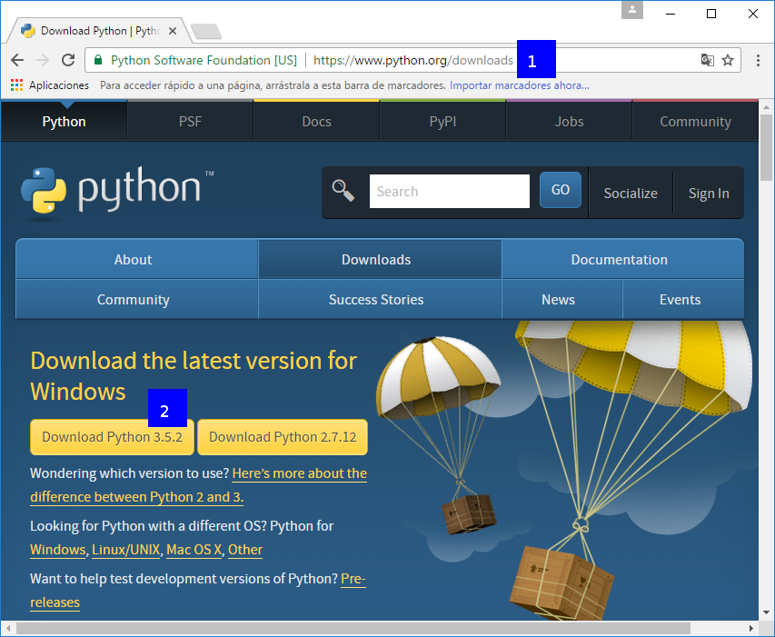
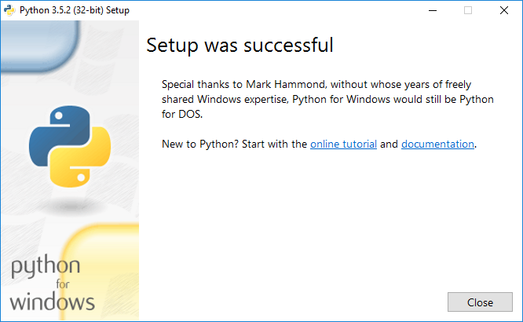

Python es un lenguaje de programación interpretado con una sintaxis que favorece un código legible. Se trata de un lenguaje de programación multiparadigma, que usa tipado dinámico y además es multiplataforma.
Desde tu navegador preferido, entra en la dirección http://python.org/downloads [1], comprueba que aparece Download the latest version for Windows y pulsa en el enlace Download Python 3.x.x [2]:
Ahora abre el instalador que te has descargado y asegúrate que están activadas las casillas Install launcher for all users (recommended) [3] y Add Python 3.X to PATH [3]:

A continuación, pulsa en Install Now [4] para proceder a la instalación.
Si todo ha ido correctamente, verás el siguiente cuadro de diálogo:
¡Enhorabuena! Ya puedes ejecutar aplicaciones de Python 3 en Windows.
Curso creado por Manuel Ignacio López Quintero bajo esta licencia.